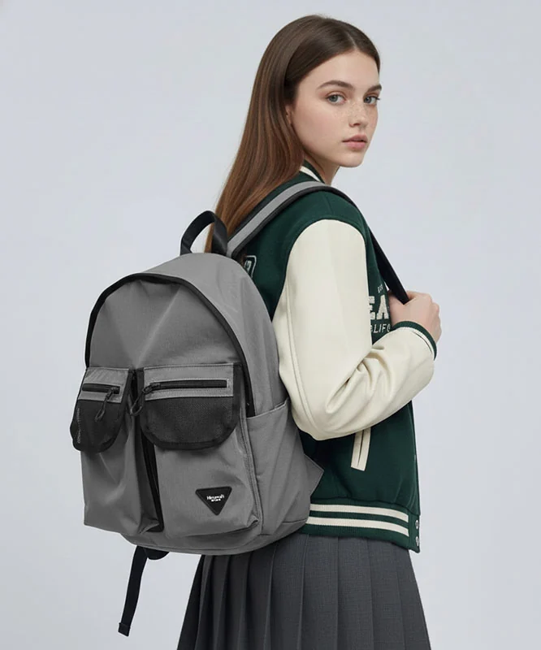
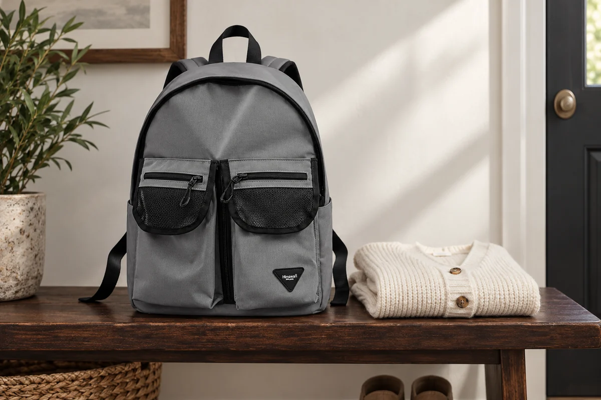

니트와 백팩이 만나는 자리를 보는 법

니트 위에 백팩을 메면 색의 조합은 거울에서 바로 보입니다. 어깨와 등에 무엇이 닿는지는 걸음을 옮기거나 가방을 벗을 때 더 잘 느낄 수 있습니다. 같은 가방을 쓰더라도 옷을 바꾼 날에는 접촉하는 면을 다시 살펴볼 수 있습니다. 짜임이 느슨하게 드러난 부분이나 외부 장식이 가까운 곳을 보면 어디에서 동작을 조정해야 할지 구체적으로 생각할 수 있습니다.
옷을 입고 메기 전에
가방을 내려놓은 상태에서 어깨끈 안쪽과 등 쪽, 아래 모서리를 봅니다. 이물질이 붙었거나 장식의 일부가 나와 있는지 살펴봅니다. 거친 부분이 느껴진다고 원단을 갈거나 부품을 임의로 잘라 정리하지 않고 현재 상태와 제품 안내를 확인합니다. 옷에서도 느슨하게 나온 실이나 장식이 있는지 봅니다. 어느 쪽에 변화가 있는지 살핀 뒤 메면 걸린 위치를 찾을 때에도 단서가 됩니다.
어깨에 가방을 올릴 때에는 니트 소매나 목 주변의 장식이 끈 아래에 들어갔는지 봅니다. 거울에서는 앞쪽만 보일 수 있으므로 자신이 느끼는 접촉도 함께 살펴봅니다. 옷을 당겨 펴려고 가방까지 한꺼번에 움직이기보다 본체 무게를 받친 상태에서 겹친 부분을 정리합니다. 주로 가방이 닿는 어깨와 등, 아래쪽 위치를 알아두면 다음에 다른 옷을 입었을 때도 비교할 기준이 됩니다.
지퍼 장식이나 추가로 단 소품이 니트에 가까이 오는지도 확인합니다. 다른 계절에는 괜찮았던 장식이 긴 소매나 두꺼운 옷과 만날 수 있습니다. 탈착이 가능한 소품이라면 원래 연결 방식에 맞춰 잠시 분리할 수 있는지 살펴봅니다. 가방을 메지 않은 상태에서 예쁘게 보이는 위치와 걸을 때 옷에 닿는 위치를 함께 봅니다. 장식을 옮길 계획이라면 실제 착용 동작에서 다시 확인합니다.
한곳이 걸리는 느낌과 계속 쓸리는 느낌
메는 순간 한곳이 잡아당겨지는 느낌이 들면 움직임을 멈추고 닿은 곳을 봅니다. 무게가 걸린 상태로 가방을 당겨 벗기보다 본체를 받친 뒤 겹친 위치를 확인합니다. 실이 부품에 걸렸는지, 옷의 장식이 끈 사이에 들어갔는지 구별합니다. 보이지 않는 곳에서 잡아당기는 동작을 계속하기보다 분리할 부분을 볼 수 있는 자세를 만드는 것이 먼저입니다.
걸음마다 같은 면이 비벼지는 느낌이라면 한 번의 걸림과 다른 상황일 수 있습니다. 가방이 크게 움직이는지, 짐이 한쪽으로 몰렸는지, 옷의 일부가 끈 아래에 접혀 있는지 살펴봅니다. 끈을 더 조이면 해결될 것이라고 먼저 결정하지 않고 사용 안내에 맞는 착용과 짐 구성을 함께 봅니다. 움직임을 조정한 뒤 옷과 가방이 닿는 위치가 어떻게 달라지는지 자신의 상태를 비교할 수 있습니다.
Himawari No.1230과 니트를 함께 입을 계획이라면 평소 짐을 준비한 뒤 메고 벗는 동작을 살펴봅니다. 서 있는 앞모습뿐 아니라 끈을 빼는 순간과 등 쪽 접촉까지 봅니다. 같은 옷을 계속 사용할 때에는 귀가 후 달라진 면이 있는지 읽어두면 다음 사용에서 조정할 항목이 생깁니다. 색 조합을 고르는 시간에 실제 움직임을 한 번 더해보는 준비입니다.

벗을 때도 가방의 무게를 받친다
의자나 선반 앞에서 가방을 벗을 때에는 본체를 받칠 자리를 먼저 정합니다. 한쪽 끈에 무게를 걸고 몸을 돌리면 끈이 옷 위를 길게 지나갈 수 있습니다. 자기 동작에서 어떤 부분이 니트와 만나는지 보고 끈을 차례로 빼봅니다. 가방을 내려놓은 뒤 끈에 소매나 옷자락이 함께 남아 있지 않은지 확인합니다. 벗는 동작도 메는 동작과 같은 방식으로 살펴볼 수 있습니다.
옷을 갈아입는 날에는 가방을 임시로 어디에 두는지도 생각합니다. 벗은 니트를 가방 장식 위에 걸쳐두면 착용하지 않는 동안에도 서로 닿습니다. 옷은 의류에 맞는 위치로, 가방은 안정된 자리로 나누어 놓습니다. 다른 소품을 옷 위에 올려두었다면 함께 정리합니다. 니트 관리와 백팩 관리가 각각의 안내를 따르도록 두면 접촉을 줄이려고 다른 형태의 눌림을 만드는 일을 피할 수 있습니다.
외출 중 접촉이 불편하면 계속 같은 상태로 움직일지 잠깐 조정할지 결정합니다. 특정 옷과 가방의 조합에서 같은 위치가 반복해서 걸린다면 장식과 짐, 착용 상태를 나누어 봅니다. 한 번에 모두 바꾸면 어떤 조정이 달라진 느낌과 연결되었는지 읽기 어렵습니다. 실제로 확인할 항목을 골라 비교하고 해결하기 어려운 부품 상태는 제품 문의로 확인할 수 있습니다.
귀가 후 옷의 같은 위치를 다시 본다
어깨와 허리 쪽, 끈이 지난 면을 가볍게 살펴봅니다. 눌린 곳이나 실의 걸림이 보이면 어디에 있었는지 기억할 메모를 남길 수 있습니다. 이미 생긴 변화를 확인했다고 가방만이 원인이라고 바로 단정하지 않고 사용 중 느꼈던 접촉과 함께 봅니다. 의류 관리는 옷에 표시된 방법을 따릅니다. 임의로 실을 당기거나 잘라 현재 상태를 바꾸기 전에 필요한 관리 정보를 확인합니다.
다음에 다른 옷이나 다른 사용 시간으로 비교하고 싶다면 바꿀 조건을 정합니다. 같은 위치에 접촉이 계속 나타나는지 살피고 니트와 가방의 안내에 맞는 사용을 이어갑니다. 모든 옷에서 보풀이 생기지 않는 조합을 보장하려고 하기보다 자신의 옷에서 변화를 알아차릴 기준을 남기는 것입니다. 메기 전 접촉 면, 이동 중 느낌, 벗은 뒤의 위치가 연결되어 있으면 다음 옷차림을 고를 때도 실제 경험을 참고할 수 있습니다.